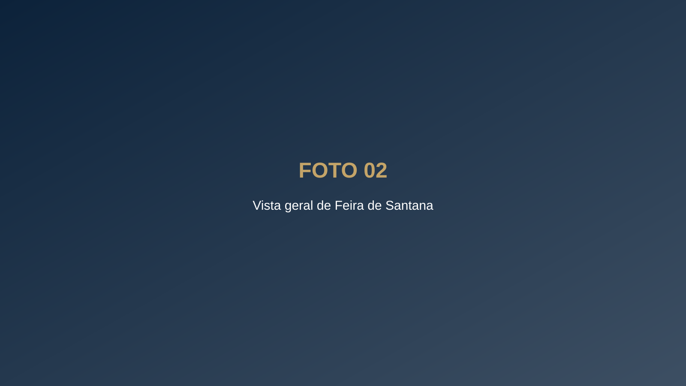
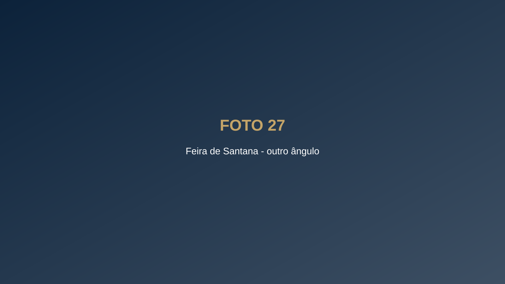
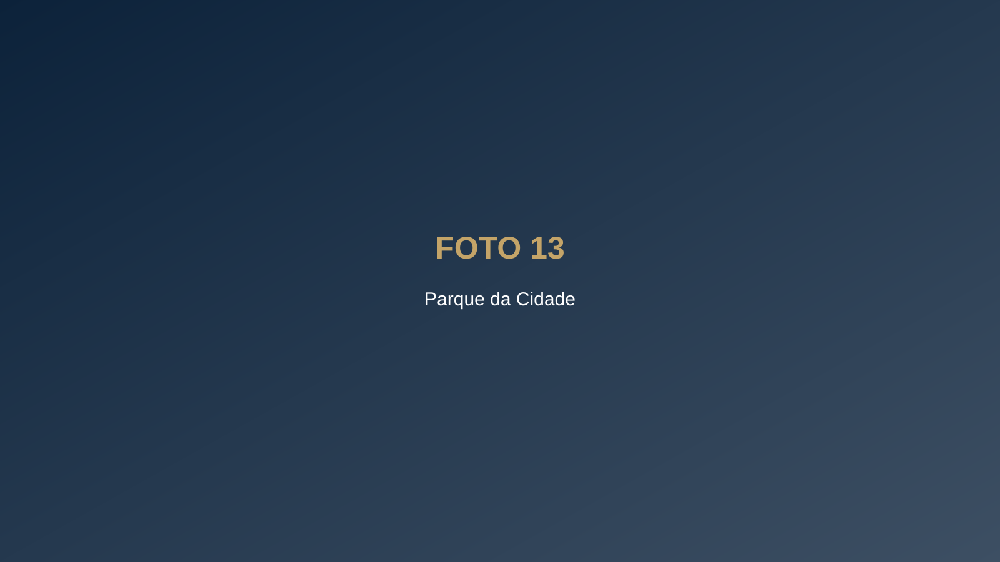
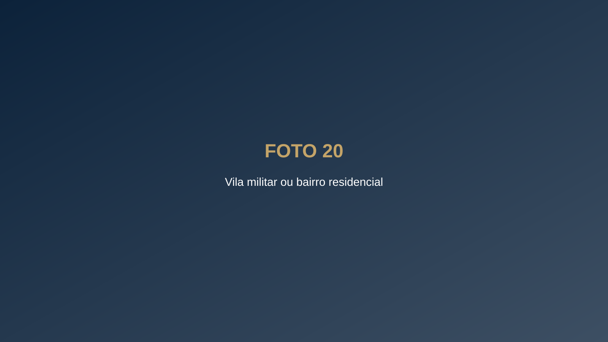

Bem-vindo ao 35º BI
Feira de Santana – Bahia · Sentinela do Sertão
Por que servir em Feira de Santana
Esta página reúne o que você e sua família precisam saber antes de chegar: onde fica a cidade, como funciona o atendimento de saúde, as opções de ensino com parceria, o lazer, o custo de vida e as missões do batalhão.


Você sabia? Feira de Santana é a segunda cidade mais populosa da Bahia e a maior do interior do Nordeste, com estrutura de cidade grande e distâncias curtas no dia a dia.
A cerca de 110 km da capital
Feira de Santana fica a aproximadamente 110 km de Salvador, pela BR-324, em pista duplicada. Com trânsito normal, a viagem de carro leva em torno de 1h30.
A cidade é um dos principais entroncamentos rodoviários do Nordeste: a BR-324 e a BR-116 passam por aqui e a BR-101 fica a poucos quilômetros, o que facilita o deslocamento para a capital, para o litoral e para o interior do estado.
O beneficiário do FUSEx conta, em Feira de Santana, com [nº] Organizações Civis de Saúde (OCS) credenciadas, entre hospitais, clínicas e laboratórios.
O encaminhamento é feito pela [Seção de Saúde / FUSEx do batalhão]. Especialidades atendidas na cidade: [listar]. [Informar para onde seguem os casos de maior complexidade.]
Colégios parceiros
Do ensino infantil ao médio, o militar encontra colégios com condições especiais para dependentes.
[Nome do colégio 1] – [Infantil, Fundamental e Médio] – [condição da parceria]
[Nome do colégio 2] – [níveis de ensino] – [condição da parceria]
[Nome do colégio 3] – [níveis de ensino] – [condição da parceria]
Faculdades parceiras
UNEX – Centro Universitário de Excelência – graduação presencial e a distância, incluindo Medicina. Parceria: [informar desconto e quem tem direito].
UNEF – Centro Universitário – graduação em diversas áreas, incluindo Medicina. Parceria: [informar desconto e quem tem direito].
A cidade também abriga a Universidade Estadual de Feira de Santana (UEFS), pública e gratuita.
O que fazer na cidade
Parques, cultura, compras e festas populares fazem parte da rotina de quem mora em Feira.

Feira é a terra da Micareta, uma das festas populares mais tradicionais da Bahia.
CUSTO-BENEFÍCIO
Viver bem gastando menos
Feira de Santana oferece comércio forte, serviços, saúde e ensino superior sem os deslocamentos longos de uma capital. Do batalhão aos principais bairros, o trajeto diário é curto.
Moradia: aluguel médio de [R$ ___] para [2 quartos] nos bairros [citar]. PNR / vila militar: [informar disponibilidade].
Dia a dia: [informar referências de custo: escola, alimentação, transporte].

Sentinela do Sertão
O 35º Batalhão de Infantaria – Batalhão Luiz Barbalho Bezerra – foi criado em 5 de julho de 1968 e é subordinado à 6ª Região Militar, com sede em Salvador.
Missão: preparar a tropa para a defesa da Pátria e para a garantia dos poderes constitucionais, da lei e da ordem, além de cooperar com o desenvolvimento regional e apoiar a população.
O batalhão forma anualmente os soldados incorporados na região, tem vocação para atuar no ambiente de caatinga e já integrou contingentes brasileiros na missão de paz da ONU no Haiti.
Sua chegada é aguardada. Em caso de dúvida antes da apresentação, procure a [seção responsável] pelo telefone [informar] ou pelo e-mail [informar].